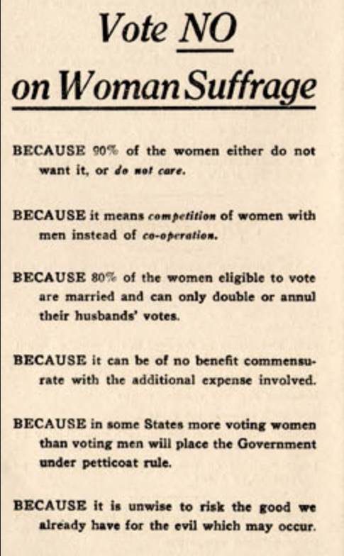
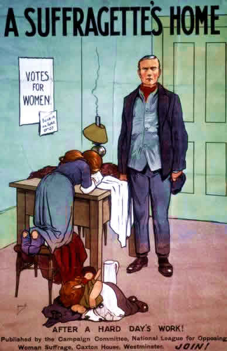
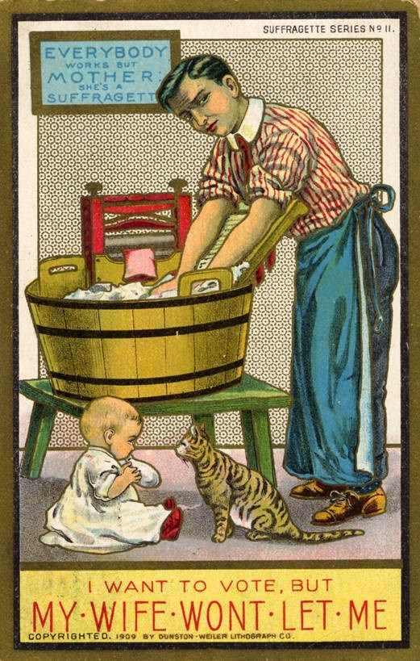
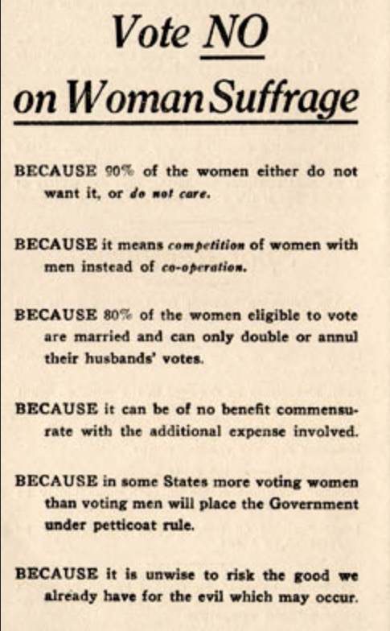

IV. What is the Future of Transnational Politics and IR?
Justin Leinaweaver (Spring 2026)
Actors and structures are mutually constituted
Interests and identities are linked and multi-layered
Anarchy is an imagined community
Power is material AND discursive
Change is possible, difficult and a normal part of the process


BECAUSE 90% of the women either do not want it, or do not care.
BECAUSE it means competition of women with men instead of co-operation.
BECAUSE 80% of the women eligible to vote are married and can only double or annul their husband’s votes.
BECAUSE it can be of no benefit commensurate with the additional expense involved.
BECAUSE in some States more voting women than voting men will place the Government under petticoat rule.
BECAUSE it is unwise to risk the good we already have for the evil which may occur.

You do not need a ballot to clean out your sink spout.
Good cooking lessens alcoholic craving quicker than a vote.
Why vote for pure food laws, when your husband does that, while you can purify your ice-box with saleratus water?
Common sense and common salt applications stop hemorrhage quicker than ballots.
Sulpho naphthol and elbow grease drive out bugs quicker than political hot air.
Claim a democracy and a dictatorship (first-come, first-served) and review their current human rights record using:
Submit a summary of each country to Canvas before class (2-3 sentences each)
Read the Universal Declaration of Human Rights
Submit to Canvas your analysis of the document (prompts provided)